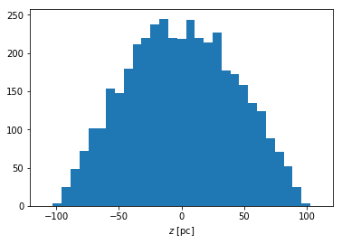
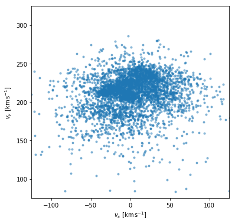
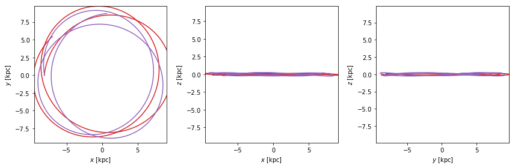
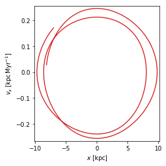
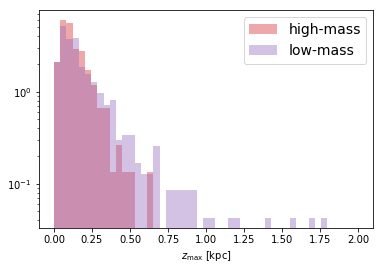

Adrian Price-Whelan
Query the Gaia data release 2 catalog to retrieve data for a sample of well-measured, nearby stars
Define high-mass and low-mass stellar samples using color-magnitude selections
Calculate orbits of the high-mass and low-mass stars within the Galaxy to show that the typically younger stars (high-mass) have smaller vertical excursions
astropy packages: coordinates, gala, astroquery
python packages:
task:
science: galaxy dynamics
Astropy Docs: Description of the Galactocentric frame in astropy coordinates
We will use data from the Gaia mission to get sky positions, distances (parallaxes), proper motions, and radial velocities for a set of stars that are close to the Sun. We will then transform these observed, heliocentric kinematic measurements to Galactocentric Cartesian coordinates and use the positions and velocities as initial conditions to compute the orbits of these stars in the galaxy using the gala Python package. We will compare the orbits of high-mass main sequence (i.e. young) stars to the orbits of lower-mass main sequence stars to show that young stars have smaller vertical amplitudes.
This tutorial depends on the Astropy affiliated packages gala and
astroquery. Both of these packages can be pip-installed with:
pip install astro-gala astroquery
In[1]:
# astropy imports
import astropy.coordinates as coord
from astropy.table import QTable
import astropy.units as u
from astroquery.gaia import Gaia
# Third-party imports
import matplotlib as mpl
import matplotlib.pyplot as plt
import numpy as np
%matplotlib inline
# gala imports
import gala.coordinates as gc
import gala.dynamics as gd
import gala.potential as gp
from gala.units import galactic
Out[1]:
Created TAP+ (v1.0.1) - Connection:
Host: gea.esac.esa.int
Use HTTPS: False
Port: 80
SSL Port: 443
The Gaia mission is an ESA mission that aims to measure the 3D positions and velocities of a large number of stars throughout the Milky Way. The primary mission objective is to enable studying the formation, structure, and evolutionary history of our Galaxy by measuring astrometry (sky position, parallax, and proper motion) for about 2 billion stars brighter than the Gaia \(G\)-band photometric magnitude \(G \lesssim 21\). By end of mission (~2022), Gaia will also provide multi-band photometry and low-resolution spectrophotometry for these sources, along with radial or line-of-sight velocities for a subsample of about 100 million stars.
In April 2018, Gaia publicly released its first major catalog of data — data release 2 or DR2 — which provides a subset of these data to anyone with an internet connection. In this tutorial, we will use astrometry, radial velocities, and photometry for a small subset of DR2 to study the kinematics of different types of stars in the Milky Way.
astroquery to retrieve Gaia data¶We’ll start by querying the Gaia science archive to download astrometric and kinematic data (parallax, proper motion, radial velocity) for a sample of stars near the Sun. We’ll use data exclusively from data release 2 (DR2) from the Gaia mission. For the demonstration here, let’s grab data for a random subset of 4096 stars within a distance of 100 pc from the Sun that have high signal-to-noise astrometric measurements.
To perform the query and to retrieve the data, we’ll use the Gaia
module in the
astroquery
package, astroquery.gaia. This module expects us to provide an SQL
query to select the data we want (technically it should be an
ADQL query,
which is similar to SQL but provides some additional functionality for
astronomy; to learn more about ADQL syntax and options, this
guide
provides an introduction). We don’t need all of the columns that are
available in DR2, so we’ll limit our query to request the sky position
(ra, dec), parallax, proper motion components (pmra,
pmdec), radial velocity, and magnitudes (phot_*_mean_mag). More
information about the available columns is in the Gaia DR2 data
model.
To select stars that have high signal-to-noise parallaxes, we’ll use the
filter parallax_over_error > 10 to select stars that have small
fractional uncertainties. We’ll also use the filter
radial_velocity IS NOT null to only select stars that have measured
radial velocities.
In[2]:
query_text = '''SELECT TOP 4096 ra, dec, parallax, pmra, pmdec, radial_velocity,
phot_g_mean_mag, phot_bp_mean_mag, phot_rp_mean_mag
FROM gaiadr2.gaia_source
WHERE parallax_over_error > 10 AND
parallax > 10 AND
radial_velocity IS NOT null
ORDER BY random_index
'''
We now pass this query to the Gaia.launch_job() class method to
create an anonymous job in the Gaia science archive to run our
query. To retrieve the results of this query as an Astropy Table
object, we then use the job.get_results() method. Note that you may
receive a number of warnings (output lines that begin with WARNING:)
from the astropy.io.votable package — these are expected, and it’s
OK to ignore these warnings (the Gaia archive returns a slightly
invalid VOTable).
In[3]:
# Note: the following lines require an internet connection, so we have
# provided the results of this query as a FITS file included with the
# tutorials repository. If you have an internet connection, feel free
# to uncomment these lines to retrieve the data with `astroquery`:
# job = Gaia.launch_job(query_text)
# gaia_data = job.get_results()
# gaia_data.write('gaia_data.fits')
In[4]:
gaia_data = QTable.read('gaia_data.fits')
The data object is now an Astropy Table called gaia_data
that contains Gaia data for 4096 random stars within 100 pc (or with
a parallax > 10 mas) of the Sun, as we requested. Let’s look at the
first four rows of the table:
In[5]:
gaia_data[:4]
Out[5]:
QTable length=4| ra | dec | parallax | pmra | pmdec | radial_velocity | phot_g_mean_mag | phot_bp_mean_mag | phot_rp_mean_mag |
|---|---|---|---|---|---|---|---|---|
| deg | deg | mas | mas / yr | mas / yr | km / s | mag | mag | mag |
| float64 | float64 | float64 | float64 | float64 | float64 | float32 | float32 | float32 |
| 256.8370985186671 | 46.5081010273448 | 10.770964834345387 | -19.76657104695835 | 55.92605676622464 | -17.673072044811907 | 12.956912994384766 | 14.192928314208984 | 11.859498023986816 |
| 129.45826809010867 | -6.806694022293258 | 41.081670013380716 | -297.34595349374183 | 43.83424795415093 | 35.53814452290586 | 6.576352119445801 | 6.931065082550049 | 6.111272811889648 |
| 2.317856723637118 | 9.00699655780345 | 17.824765284426462 | -171.8278607514459 | -1083.8740928197751 | -148.91780163518774 | 13.119074821472168 | 13.968703269958496 | 12.223302841186523 |
| 330.41287472805976 | 51.88897801553169 | 13.0756133009657 | -85.30745872006916 | -34.23366534215265 | -28.726469345049587 | 12.101919174194336 | 13.05264949798584 | 11.149785995483398 |
Note that the table columns already contain units! They are indicated in the second row of the header.
astropy.coordinates to represent and transform stellar positions and velocities¶Let’s double check that the farthest star is still within 100 pc, as we
expect from the parallax selection we did in the query above. To do
this, we’ll create an Astropy Distance object using the parallax
(Note: this inverts the parallax to compute the distance! This is only
a good approximation when the parallax signal to noise is large, as we
ensured in the query above with ``parallax_over_error > 10``):
In[6]:
dist = coord.Distance(parallax=u.Quantity(gaia_data['parallax']))
dist.min(), dist.max()
Out[6]:
(<Distance 8.79909291 pc>, <Distance 99.99985292 pc>)
It looks like the closest star in our sample is about 9 pc away, and the farthest is almost 100 pc, as we expected.
We next want to convert the coordinate position and velocity data from
heliocentric, spherical values to Galactocentric, Cartesian values.
We’ll do this using the Astropy
coordinates
transformation machinery. To make use of this functionality, we first
have to create a SkyCoord object from the Gaia data we
downloaded. The Gaia DR2 data are in the ICRS (equatorial) reference
frame, which is also the default frame when creating new SkyCoord
objects, so we don’t need to specify the frame below:
In[7]:
c = coord.SkyCoord(ra=gaia_data['ra'],
dec=gaia_data['dec'],
distance=dist,
pm_ra_cosdec=gaia_data['pmra'],
pm_dec=gaia_data['pmdec'],
radial_velocity=gaia_data['radial_velocity'])
Note: as described in the Gaia DR2 data
model,
the Gaia column pmra contains the cos(dec) term. In Astropy
coordinates, the name of this component is pm_ra_cosdec.
Let’s again look at the first four coordinates in the SkyCoord
object:
In[8]:
c[:4]
Out[8]:
<SkyCoord (ICRS): (ra, dec, distance) in (deg, deg, pc)
[(256.83709852, 46.50810103, 92.84219338),
(129.45826809, -6.80669402, 24.3417563 ),
( 2.31785672, 9.00699656, 56.1017205 ),
(330.41287473, 51.88897802, 76.47824825)]
(pm_ra_cosdec, pm_dec, radial_velocity) in (mas / yr, mas / yr, km / s)
[( -19.76657105, 55.92605677, -17.67307204),
(-297.34595349, 43.83424795, 35.53814452),
(-171.82786075, -1083.87409282, -148.91780164),
( -85.30745872, -34.23366534, -28.72646935)]>
Now that we have a SkyCoord object with the Gaia data, we can
transform to other coordinate systems. For example, we can transform to
the Galactic coordinate system (centered on the Sun but with the
zero latitude approximately aligned with the Galactic plane) using the
.galactic attribute (this works for any of the built-in Astropy
coordinate
frames,
e.g., .fk5 should also work):
In[9]:
c.galactic[:4]
Out[9]:
<SkyCoord (Galactic): (l, b, distance) in (deg, deg, pc)
[( 72.32926334, 36.8367097 , 92.84219338),
(232.07542475, 19.9763116 , 24.3417563 ),
(105.68646983, -52.44715126, 56.1017205 ),
( 98.28701089, -2.66800849, 76.47824825)]
(pm_l_cosb, pm_b, radial_velocity) in (mas / yr, mas / yr, km / s)
[( 55.13035551, 21.88801174, -17.67307204),
(-195.30630898, -228.4545973 , 35.53814452),
(-455.13470935, -998.57912013, -148.91780164),
( -88.74713695, 23.94268239, -28.72646935)]>
The Galactic frame is still centered on the solar system barycenter,
whereas we want to compute the positions and velocities of our sample of
stars in a Galactocentric frame, centered on the center of the Milky
Way. To do this transformation, Astropy provides the Galactocentric
frame class, which allows us to use our own conventions for, e.g., the
distance from the sun to the Galactic center (galcen_distance) or
the height of the Sun over the Galactic midplane (z_sun). Let’s look
at the default values for the solar position and velocity:
In[10]:
coord.Galactocentric()
Out[10]:
<Galactocentric Frame (galcen_coord=<ICRS Coordinate: (ra, dec) in deg
(266.4051, -28.936175)>, galcen_distance=8.3 kpc, galcen_v_sun=(11.1, 232.24, 7.25) km / s, z_sun=27.0 pc, roll=0.0 deg)>
We’ll instead use a distance of 8.1 kpc — more consistent with the
recent results from the GRAVITY
collaboration — and a solar height
of 0 pc. We’ll use the default solar velocity (see output above). We can
transform our data to this frame using the transform_to() method by
specifying the Galactocentric frame with our adopted values:
In[11]:
galcen = c.transform_to(coord.Galactocentric(z_sun=0*u.pc,
galcen_distance=8.1*u.kpc))
The galcen object now contains the data for our sample, but in the
Galactocentric frame:
In[12]:
galcen[:4]
Out[12]:
<SkyCoord (Galactocentric: galcen_coord=<ICRS Coordinate: (ra, dec) in deg
(266.4051, -28.936175)>, galcen_distance=8.1 kpc, galcen_v_sun=(11.1, 232.24, 7.25) km / s, z_sun=0.0 pc, roll=0.0 deg): (x, y, z) in pc
[(-8077.44468803, 70.79989896, 55.66242071),
(-8114.06090109, -18.04601124, 8.31586669),
(-8109.24493623, 32.92015736, -44.47693151),
(-8111.0109288 , 75.59768012, -3.55986822)]
(v_x, v_y, v_z) in km / s
[(-18.06556759, 220.62501167, 4.36424163),
(-32.74107553, 212.64094753, -5.38474972),
(209.09926667, -25.11804786, -36.55277769),
( 47.01632893, 208.88147077, 17.25803683)]>
We can access the positions of the stars using the .x, .y, and
.z attributes, for example:
In[13]:
plt.hist(galcen.z.value, bins=np.linspace(-110, 110, 32))
plt.xlabel('$z$ [{0:latex_inline}]'.format(galcen.z.unit));
Out[13]:
Similarly, for the velocity components, we can use .v_x, .v_y,
and .v_z. For example, to create a classic “UV” plane velocity plot:
In[14]:
fig, ax = plt.subplots(1, 1, figsize=(6, 6))
ax.plot(galcen.v_x.value, galcen.v_y.value,
marker='.', linestyle='none', alpha=0.5)
ax.set_xlim(-125, 125)
ax.set_ylim(200-125, 200+125)
ax.set_xlabel('$v_x$ [{0:latex_inline}]'.format(u.km/u.s))
ax.set_ylabel('$v_y$ [{0:latex_inline}]'.format(u.km/u.s))
Out[14]:
Text(0, 0.5, '$v_y$ [$\mathrm{km\,s^{-1}}$]')

Along with astrometric and radial velocity data, Gaia also provides
photometric data for three photometric bandpasses: the broad-band G,
the blue BP, and the red RP magnitudes. Let’s make a Gaia
color-magnitude diagram using the \(G_{\rm BP}-G_{\rm RP}\) color
and the absolute \(G\)-band magnitude \(M_G\). We’ll compute the
absolute magnitude using the distances we computed earlier — Astropy
Distance objects have a convenient .distmod attribute that
provides the distance modulus:
In[15]:
M_G = gaia_data['phot_g_mean_mag'] - dist.distmod
BP_RP = gaia_data['phot_bp_mean_mag'] - gaia_data['phot_rp_mean_mag']
In[16]:
fig, ax = plt.subplots(1, 1, figsize=(6, 6))
ax.plot(BP_RP, M_G,
marker='.', linestyle='none', alpha=0.3)
ax.set_xlim(0, 3)
ax.set_ylim(11, 1)
ax.set_xlabel('$G_{BP}-G_{RP}$')
ax.set_ylabel('$M_G$')
Out[16]:
Text(0, 0.5, '$M_G$')
In the above, there is a wide range of main sequence star masses which
have a range of lifetimes. The most massive stars were likely born in
the thin disk and their orbits therefore likely have smaller vertical
amplitudes than the typical old main sequence star. To compare, we’ll
create two sub-selections of the Gaia CMD to select massive and low-mass
main sequence stars from the CMD for comparison. You may see two
RuntimeWarning(s) from running the next cell — these are expected
and it’s safe to ignore them.
In[17]:
hi_mass_mask = ((BP_RP > 0.5*u.mag) & (BP_RP < 0.7*u.mag) &
(M_G > 2*u.mag) & (M_G < 3.75*u.mag) &
(np.abs(galcen.v_y - 220*u.km/u.s) < 50*u.km/u.s))
lo_mass_mask = ((BP_RP > 2*u.mag) & (BP_RP < 2.4*u.mag) &
(M_G > 8.2*u.mag) & (M_G < 9.7*u.mag) &
(np.abs(galcen.v_y - 220*u.km/u.s) < 50*u.km/u.s))
Out[17]:
/home/circleci/project/venv/lib/python3.6/site-packages/astropy/units/quantity.py:463: RuntimeWarning: invalid value encountered in greater
result = super().__array_ufunc__(function, method, *arrays, **kwargs)
/home/circleci/project/venv/lib/python3.6/site-packages/astropy/units/quantity.py:463: RuntimeWarning: invalid value encountered in less
result = super().__array_ufunc__(function, method, *arrays, **kwargs)
Let’s also define default colors to use when visualizing the high- and low-mass stars:
In[18]:
hi_mass_color = 'tab:red'
lo_mass_color = 'tab:purple'
Let’s now visualize these two CMD selections:
In[19]:
fig, ax = plt.subplots(1, 1, figsize=(6, 6))
ax.plot(BP_RP, M_G,
marker='.', linestyle='none', alpha=0.1)
for mask, color in zip([lo_mass_mask, hi_mass_mask],
[lo_mass_color, hi_mass_color]):
ax.plot(BP_RP[mask], M_G[mask],
marker='.', linestyle='none',
alpha=0.5, color=color)
ax.set_xlim(0, 3)
ax.set_ylim(11, 1)
ax.set_xlabel('$G_{BP}-G_{RP}$')
ax.set_ylabel('$M_G$')
Out[19]:
Text(0, 0.5, '$M_G$')
Thus far, we’ve used the color-magnitude diagram (using parallaxes and photometry from Gaia to compute absolute magnitudes) to select samples of high- and low-mass stars based on their colors.
In what follows, we’ll compute Galactic orbits for stars in the high- and low-mass star selections above and compare.
gala to numerically integrate Galactic stellar orbits¶gala is an Astropy affiliated package for Galactic dynamics.
gala provides functionality for representing analytic mass models
that are commonly used in Galactic dynamics contexts for numerically
integrating stellar orbits. For examples, see Chapter 3 of Binney and
Tremaine (2008). The gravitational potential models are defined by
specifying parameters like mass, scale radii, or shape parameters and
can be combined. Once defined, they can be used in combination with
numerical integrators provided in gala to compute orbits. gala
comes with a pre-defined, multi-component, but simple model for the
Milky
Way
that can be used for orbit integrations. Let’s create an instance of the
MilkyWayPotential model and integrate orbits for the high- and
low-mass main sequence stars selected above:
In[20]:
milky_way = gp.MilkyWayPotential()
milky_way
Out[20]:
<CompositePotential disk,bulge,nucleus,halo>
This model has mass components for the Galactic disk, bulge, nucleus,
and halo, and the parameters were defined by fitting measurements of the
Milky Way enclosed mass at various radii. See this
document
for more details. The parameters of the MilkyWayPotential can be
changed by passing in a dictionary of parameter values to argument names
set by the component names. For example, to change the disk mass to make
it slightly more massive (the choice 8e10 is arbitrary!):
In[21]:
different_disk_potential = gp.MilkyWayPotential(disk=dict(m=8e10*u.Msun))
different_disk_potential
Out[21]:
<CompositePotential disk,bulge,nucleus,halo>
To integrate orbits, we have to combine the mass model with a reference
frame into a Hamiltonian object. If no reference frame is passed in,
it’s assumed that we are in a static inertial frame moving with the
center of the mass model:
In[22]:
H = gp.Hamiltonian(milky_way)
Now that we have the mass model, we can integrate orbits. Let’s now
define initial conditions for subsets of the high- and low-mass star
selections we did above. Initial conditions in gala are specified by
creating PhaseSpacePosition objects. We can create these objects
directly from a Galactocentric object, like we have defined above
from transforming the Gaia data — we first have to extract the data with
a Cartesian representation. We can do this by calling
galcen.cartesian:
In[23]:
w0_hi = gd.PhaseSpacePosition(galcen[hi_mass_mask].cartesian)
w0_lo = gd.PhaseSpacePosition(galcen[lo_mass_mask].cartesian)
w0_hi.shape, w0_lo.shape
Out[23]:
((185,), (577,))
From the above, we can see that we have 185 high-mass star and 577
low-mass stars in our selections. To integrate orbits, we call the
.integrate_orbit() method on the Hamiltonian object we defined
above, and pass in initial conditions. We also have to specify the
timestep for integration, and how long we want to integrate for. We can
do this by either specifying the amount of time to integrate for, or by
specifying the number of timesteps. Let’s specify a timestep of 1 Myr
and a time of 500 Myr (approximately two revolutions around the Galaxy
for a Sun-like orbit):
In[24]:
orbits_hi = H.integrate_orbit(w0_hi, dt=1*u.Myr,
t1=0*u.Myr, t2=500*u.Myr)
orbits_lo = H.integrate_orbit(w0_lo, dt=1*u.Myr,
t1=0*u.Myr, t2=500*u.Myr)
By default this uses a
Leapfrog
numerical integration scheme, but the integrator can be customized — see
the gala
examples
for more details.
With the orbit objects in hand, we can continue our comparison of the
orbits of high-mass and low-mass main sequence stars in the solar
neighborhood. Let’s start by plotting a few orbits. The .plot()
convenience function provides a quick way to visualize orbits in three
Cartesian projections. For example, let’s plot the first orbit in each
subsample on the same figure:
In[25]:
fig = orbits_hi[:, 0].plot(color=hi_mass_color)
_ = orbits_lo[:, 0].plot(axes=fig.axes, color=lo_mass_color)
Out[25]:
Note in the above figure that the orbits are almost constrained to the x-y plane: the excursions are much larger in the x and y directions as compared to the z direction.
The default plots show all Cartesian projections. This can be customized to, for example, only show specified components (including velocity components):
In[26]:
fig = orbits_hi[:, 0].plot(['x', 'v_x'],
auto_aspect=False,
color=hi_mass_color)
Out[26]:
The representation can also be changed, for example, to a cylindrical representation:
In[27]:
fig = orbits_hi[:, 0].cylindrical.plot(['rho', 'z'],
color=hi_mass_color,
label='high mass')
_ = orbits_lo[:, 0].cylindrical.plot(['rho', 'z'], color=lo_mass_color,
axes=fig.axes,
label='low mass')
fig.axes[0].legend(loc='upper left')
fig.axes[0].set_ylim(-0.3, 0.3)
Out[27]:
(-0.3, 0.3)
Already in the above plot we can see that the high-mass star has an orbit with smaller eccentricity (smaller radial variations) and smaller vertical oscillations as compared to the low-mass star. Below, we’ll quantify this and look at the vertical excursions of all of the high- and low-mass stars, respectively.
Let’s now compare the vertical amplitudes of the orbits in each of our
sub-selections! We can compute the (approximate) maximum vertical height
of each orbit using the convenience method .zmax() (you can see a
list of all convenience methods on the Orbit object in the Gala
documentation
here):
In[28]:
zmax_hi = orbits_hi.zmax(approximate=True)
zmax_lo = orbits_lo.zmax(approximate=True)
Let’s make histograms of the maximum \(z\) heights for these two samples:
In[29]:
bins = np.linspace(0, 2, 50)
plt.hist(zmax_hi.value, bins=bins,
alpha=0.4, density=True, label='high-mass',
color=hi_mass_color)
plt.hist(zmax_lo.value, bins=bins,
alpha=0.4, density=True, label='low-mass',
color=lo_mass_color);
plt.legend(loc='best', fontsize=14)
plt.yscale('log')
plt.xlabel(r"$z_{\rm max}$" + " [{0:latex}]".format(zmax_hi.unit))
Out[29]:
Text(0.5, 0, '$z_{\rm max}$ [$\mathrm{kpc}$]')

The distribution of \(z\)-heights for the low-mass (i.e. typically older) stars is more extended, as we predicted!
In this tutorial, we’ve used astroquery to query the Gaia science
archive to retrieve kinematic and photometric data for a small sample of
stars with well-measured parallaxes from Gaia DR2. We used the colors
and absolute magnitudes of these stars to select subsamples of high- and
low-mass stars, which, on average, will provide us with subsamples of
stars that are younger and older, respectively. We then constructed a
model for the gravitational field of the Milky Way and numerically
integrated the orbits of all stars in each of the two subsamples.
Finally, we used the orbits to compute the maximum height that each star
reaches above the Galactic midplane and showed that the younger
(higher-mass) stars tend to have smaller excursions from the Galactic
plane, consistent with the idea that stars are either born in a
“thinner” disk and dynamically “heated,” or that older stars formed with
a larger vertical scale-height.
Some of the low-mass star orbits have large vertical excursions from the Galactic disk (up to and above 1.5 kpc) and could therefore be stellar halo stars rather than part of the Galactic disk. Use the zmax values to select a few of these stars and plot their full orbits. Do these stars look like they are part of the disk? Why / why not?
Orbit objects also provide methods for computing apocenter and pericenter distances and eccentricities. Which types of stars (high-mass or low-mass) tend to have high eccentricity orbits within the Galaxy? Similar to the plot above, make a plot showing the two distributions of eccentricity values.
In[0]: